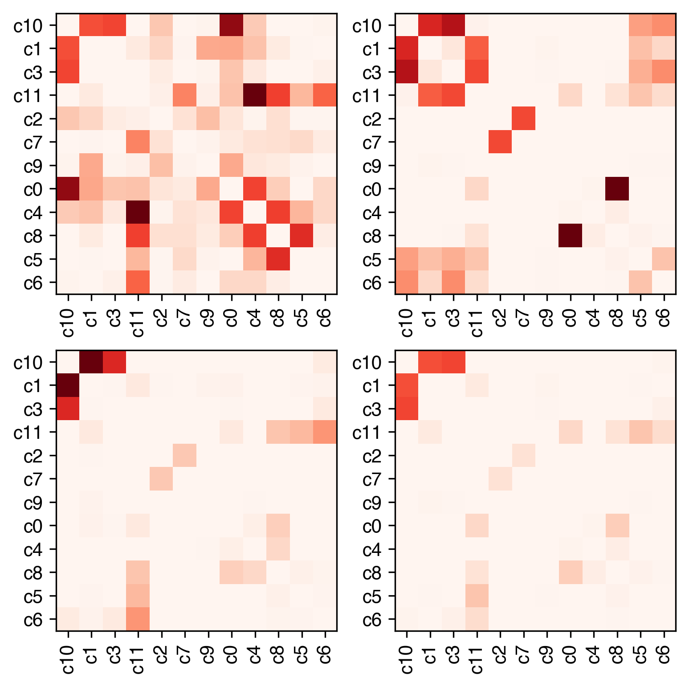
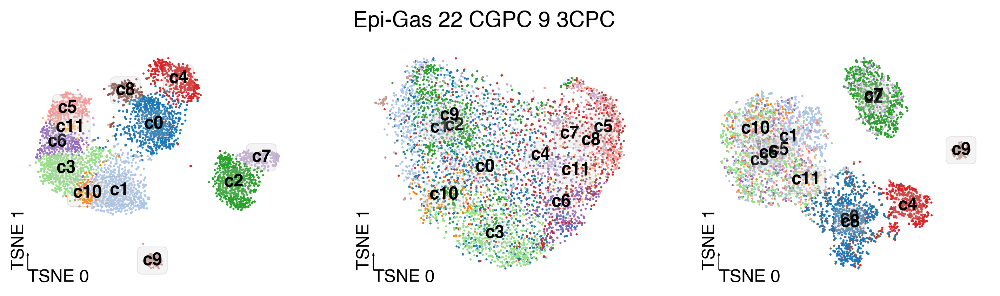
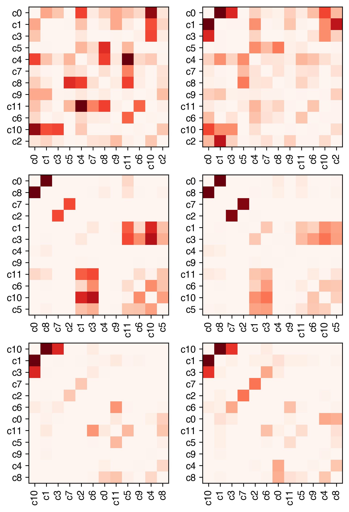

5. Modality contribution#
Part of the Fig. 1 chapter — see it for the panel-by-panel map. The first code cell sets ENTEX_ROOT and activates the no-overwrite guard (see the Reproduction guide). Outputs shown are the author’s original run.
# === Reproduction setup — edit ENTEX_ROOT / REF_ROOT for your machine ===
import os, sys
ENTEX_ROOT = os.environ.get('ENTEX_ROOT', '/large_storage/zhoulab/zhoujt/project/ENTEx')
REF_ROOT = os.environ.get('REF_ROOT', '/large_storage/zhoulab/ref')
BOOK_ROOT = os.environ.get('BOOK_ROOT', f'{ENTEX_ROOT}/analysis/HumanCellEpigenomeAtlas')
sys.path.insert(0, BOOK_ROOT)
os.chdir(f'{ENTEX_ROOT}/analysis') # original working directory
import repro_guard # no-overwrite guard (default: skip existing)
import numpy as np
import pandas as pd
import seaborn as sns
import matplotlib as mpl
import matplotlib.pyplot as plt
from glob import glob
import anndata
import scanpy as sc
import scanpy.external as sce
from sklearn.preprocessing import normalize
from ALLCools.clustering import *
from ALLCools.plot import *
from ALLCools.integration.seurat_class import SeuratIntegration
mpl.style.use('default')
mpl.rcParams['pdf.fonttype'] = 42
mpl.rcParams['ps.fonttype'] = 42
mpl.rcParams['font.family'] = 'sans-serif'
mpl.rcParams['font.sans-serif'] = 'Helvetica'
def dump_embedding(adata, name, n_dim=2):
# put manifold coordinates into adata.obs
for i in range(n_dim):
adata.obs[f'{name}_{i}'] = adata.obsm[f'X_{name}'][:, i]
return adata
indir = '/large_experiments/zhoulab/zhoujt/project/ENTEx/clustering/merged/'
L1_list = np.sort([xx.split('/')[-2] for xx in glob(f'{indir}L2/*/5kCG100k3C_embed.h5ad')])
print(len(L1_list))
35
for ct in L1_list:
ct = 'Epi-Gas'
adata_mc = anndata.read_h5ad(f'{indir}L2/{ct}/5kCG_embed.h5ad')
adata_3c = anndata.read_h5ad(f'{indir}L2/{ct}/100k3C_embed.h5ad')
adata_3c = adata_3c[adata_mc.obs.index].copy()
adata = anndata.read_h5ad(f'{indir}L2/{ct}/5kCG100k3C_embed.h5ad')
npc_cg = [int(xx.split('_')[1][1:]) for xx in adata_mc.obsm.keys() if '_seuratL2_tsne' in xx][0]
# npc_3c = [int(xx.split('_')[1][1:]) for xx in adata_3c.obsm.keys() if '100k3C_u' in xx][0]
npc_3c = [int(xx.split('_')[1][2:]) for xx in adata_3c.obsm.keys() if '_seuratL2_tsne' in xx][0]
print(npc_cg, npc_3c)
break
22 9
def _create_model(n_estimators=1000):
"""Init default model"""
clf = BalancedRandomForestClassifier(
n_estimators=n_estimators,
criterion="gini",
max_depth=None,
min_samples_split=2,
min_samples_leaf=2,
min_weight_fraction_leaf=0.0,
max_features="sqrt",
max_leaf_nodes=None,
min_impurity_decrease=0.0,
bootstrap=True,
oob_score=False,
sampling_strategy="auto",
replacement=False,
n_jobs=48,
random_state=0,
verbose=0,
warm_start=False,
class_weight=None,
)
return clf
def _split_train_test_per_group(x, y, frac, max_train, random_state):
"""Split train test for each cluster and make sure there are enough cells for train."""
y_series = pd.Series(y)
# split train test per group
train_idx = []
test_idx = []
outlier_idx = []
for cluster, sub_series in y_series.groupby(y_series):
if (cluster == -1) or (sub_series.size < 3):
outlier_idx += sub_series.index.tolist()
else:
n_train = max(1, min(max_train, int(sub_series.size * frac)))
is_train = sub_series.index.isin(sub_series.sample(n_train, random_state=random_state).index)
train_idx += sub_series.index[is_train].tolist()
test_idx += sub_series.index[~is_train].tolist()
x_train = x[train_idx]
y_train = y[train_idx]
x_test = x[test_idx]
y_test = y[test_idx]
return x_train, y_train, x_test, y_test
def single_supervise_evaluation(clf, x_train, y_train, x_test, y_test, r1_norm_step=0.05, r2_norm_step=0.05):
"""Run supervise evaluation on confusion matrix."""
# fit model
clf.fit(x_train, y_train)
# calc accuracy
y_train_pred = clf.predict(x_train)
accuracy_train = balanced_accuracy_score(y_true=y_train, y_pred=y_train_pred)
print(f"Balanced accuracy on the training set: {accuracy_train:.3f}")
y_test_pred = clf.predict(x_test)
accuracy_test = balanced_accuracy_score(y_true=y_test, y_pred=y_test_pred)
print(f"Balanced accuracy on the hold-out set: {accuracy_test:.3f}")
# get confusion matrix
y_pred = clf.predict(x_test)
labels = np.unique(y_test)
cmat = confusion_matrix(y_test, y_pred, labels=labels)
# print(labels)
# normalize confusion matrix
r1_cmat = _r1_normalize(cmat)
r2_cmat = _r2_normalize(cmat)
m1 = np.max(r1_cmat)
if np.isnan(m1):
m1 = 1.0
m2 = np.max(r2_cmat)
cluster_map = {}
while (len(cluster_map) == 0) and (m1 > 0) and (m2 > 0):
m1 -= r1_norm_step
m2 -= r2_norm_step
# final binary matrix to calculate which clusters need to be merged
judge = np.maximum.reduce([(r1_cmat > m1), (r2_cmat > m2)])
if judge.sum() > 0:
rows, cols = np.where(judge)
edges = zip(rows.tolist(), cols.tolist())
g = nx.Graph()
g.add_edges_from(edges)
for comp in nx.connected_components(g):
to_label = comp.pop()
for remain in comp:
cluster_map[remain] = to_label
return clf, accuracy_test, cluster_map, cmat, r1_cmat, r2_cmat, labels
# clustering name
clustering_name = 'L1'
# ConsensusClustering
# Important factores
n_neighbors = 25
leiden_resolution = 1.0
# this parameter is the final target that limit the total number of clusters
# Higher accuracy means more conservative clustering results and less number of clusters
target_accuracy = 0.9
min_cluster_size = 30
# Other ConsensusClustering parameters
metric = 'euclidean'
consensus_rate = 0.8
leiden_repeats = 500
random_state = 0
train_frac = 0.5
train_max_n = 500
max_iter = 50
n_jobs = 4
# Dendrogram via Multiscale Bootstrap Resampling
nboot = 10000
method_dist = 'correlation'
method_hclust = 'average'
plot_type = 'static'
data = [adata_mc.obsm[f'5kCG_u{npc_cg}_seuratL2'],
adata_3c.obsm[f'100k3C_pc{npc_3c}_seuratL2'],
adata.obsm[f'5kCG100k3C_u{npc_cg}pc{npc_3c}'],
]
label = adata.obs['leiden_init'].values
step = 0.1
from imblearn.ensemble import BalancedRandomForestClassifier
import networkx as nx
result = []
for x in data:
clf = _create_model(n_estimators=500)
# n_labels = np.unique(cur_y[cur_y != -1]).size
x_train, y_train, x_test, y_test = _split_train_test_per_group(
x=x,
y=label,
frac=train_frac,
max_train=train_max_n,
random_state=random_state,
# every time train-test split got a different random state
)
(
clf,
score,
cluster_map,
cmat,
r1_cmat,
r2_cmat,
labels,
) = single_supervise_evaluation(
clf,
x_train,
y_train,
x_test,
y_test,
r1_norm_step=step,
r2_norm_step=step,
)
print(labels)
step = min(0.2, max(0.05, 2 * (target_accuracy - score)))
result.append([cmat, r1_cmat, r2_cmat, cluster_map, score, step, labels])
Balanced accuracy on the training set: 0.763
Balanced accuracy on the hold-out set: 0.558
['c0' 'c1' 'c10' 'c11' 'c2' 'c3' 'c4' 'c5' 'c6' 'c7' 'c8' 'c9']
Balanced accuracy on the training set: 0.769
Balanced accuracy on the hold-out set: 0.544
['c0' 'c1' 'c10' 'c11' 'c2' 'c3' 'c4' 'c5' 'c6' 'c7' 'c8' 'c9']
Balanced accuracy on the training set: 0.965
Balanced accuracy on the hold-out set: 0.913
['c0' 'c1' 'c10' 'c11' 'c2' 'c3' 'c4' 'c5' 'c6' 'c7' 'c8' 'c9']
tmp = result[2][1]
rorder = sns.clustermap(tmp, figsize=(0.1, 0.1)).dendrogram_row.reordered_ind
fig, axes = plt.subplots(2, 2, figsize=(6,6), dpi=300)
for i in range(3):
ax = axes.flatten()[i]
tmp = result[i][1]
labels = result[i][-1]
ax.imshow(tmp[rorder][:, rorder], cmap='Reds', vmin=0, vmax=1)
ax.set_xticks(np.arange(tmp.shape[0]))
ax.set_yticks(np.arange(tmp.shape[0]))
ax.set_xticklabels(labels[rorder], rotation=90)
ax.set_yticklabels(labels[rorder])
ax = axes[-1, -1]
tmp = np.min([result[0][1], result[1][1]], axis=0)
ax.imshow(tmp[rorder][:, rorder], cmap='Reds', vmin=0, vmax=1)
ax.set_xticks(np.arange(tmp.shape[0]))
ax.set_yticks(np.arange(tmp.shape[0]))
ax.set_xticklabels(labels[rorder], rotation=90)
ax.set_yticklabels(labels[rorder])
[Text(0, 0, 'c10'),
Text(0, 1, 'c1'),
Text(0, 2, 'c3'),
Text(0, 3, 'c11'),
Text(0, 4, 'c2'),
Text(0, 5, 'c7'),
Text(0, 6, 'c9'),
Text(0, 7, 'c0'),
Text(0, 8, 'c4'),
Text(0, 9, 'c8'),
Text(0, 10, 'c5'),
Text(0, 11, 'c6')]

coord_base = 'tsne'
ds = 150/np.sqrt(adata.shape[0])
fig, axes = plt.subplots(1, 3, figsize=(12,3), dpi=300)
fig.suptitle(f'{ct} {npc_cg} CGPC {npc_3c} 3CPC', fontsize=15)
for i,xx in enumerate([adata, adata_mc, adata_3c]):
# dump_embedding(xx, coord_base)
tmp = xx.obs.copy()
tmp['leiden_init'] = adata.obs['leiden_init'].copy()
# tmp['ClusterTissue'] = adata.obs['ClusterTissue'].copy()
ax = axes[i]
_ = categorical_scatter(data=tmp,
ax=ax,
coord_base=coord_base,
hue='leiden_init',
text_anno='leiden_init',
s=ds,
labelsize=12,
max_points=None,
palette='tab20',
scatter_kws={'rasterized':True},
# legend_kws={'ncol':1},
# show_legend=True
)

for xx,yy in result[0][3].items():
print(result[0][-1][xx],result[0][-1][yy])
c3 c0
c5 c10
c2 c18
results[]
fig, axes = plt.subplots(3, 2, figsize=(6,9), dpi=300)
for i in range(3):
rorder = sns.clustermap(result[i][2], figsize=(0.1, 0.1)).dendrogram_row.reordered_ind
for j in range(2):
ax = axes[i,j]
tmp = result[i][j+1]
labels = result[i][-1]
ax.imshow(tmp[rorder][:, rorder], cmap='Reds', vmin=0, vmax=1)
ax.set_xticks(np.arange(tmp.shape[0]))
ax.set_yticks(np.arange(tmp.shape[0]))
ax.set_xticklabels(labels[rorder], rotation=90)
ax.set_yticklabels(labels[rorder])
# ax = axes[i,2]

from sklearn.metrics import (
adjusted_rand_score,
balanced_accuracy_score,
confusion_matrix,
pairwise_distances,
)
from ALLCools.clustering.ConsensusClustering import _r1_normalize, _r2_normalize, _split_train_test_per_group, single_supervise_evaluation